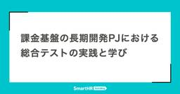
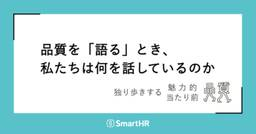
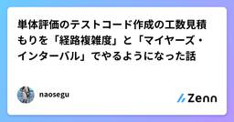
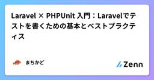

直近1週間の更新
7/12 (土)

スクラムフェス三河2025で登壇できることになりました  天の月
天の月
表題の通り、スクラムフェス三河2025で登壇できることになったので、今日はその告知です。 発表概要 Acceptが決まったときの心境 登壇にあたっての想い 発表概要 confengine.com これまで様々な業種・業態でプロダクト開発をしてきましたが、2024年半ばからは複数の製造業のプロダクトに携わる機会が出てきました。とはいえ、プロダクト開発の概要を聞かされたときは、アジャイル開発とは程遠い現場に聞こえた上に自分の理想とする環境との乖離も大きく感じました。 正直飛び込むのを躊躇するようなタイミングもありましたが、スクラムフェス三河で話せるネタの一つになるだろうし、製造業の闇と洗礼を浴びる…
40分前
7/11 (金)

Hey Say アジャCITYの読書会(7回目)に参加してきた 天の月
表題のイベントに参加してきたので、会の様子を書いていきます。 前回に引き続き、ソフトウェアテスト徹底指南書 〜開発の高品質と高スピードを両立させる実践アプローチを読むことになりました。 https://www.amazon.co.jp/dp/B0FBG4GM9M プロダクトアウトからコンセプトアウトへ テストやレビューをひたすら増やせばいいというアプローチ 自分の手掛ける品質を考える手法 期待に従うか期待を超えるか？ 品質特性やテストピラミッドを重視し続けるチーム プロダクトアウトからコンセプトアウトへ 書籍の記載を見て、プロダクトオーナーがQAに転身みたいな話はあんまり聞かない印象があるんだ…
1日前

課金基盤の長期開発プロジェクトにおける総合テストの実践と学び 1
1 QA - SmartHR Tech Blog
QA - SmartHR Tech Blog
こんにちは！品質保証部のプロダクト基盤ユニット所属、QAエンジニア（以下、QAE）のchokichiです。 今回は、「雇用形態別課金」プロジェクトの総合テストについて振り返ってみたので、設計思想から実際の結果分析まで、包み隠さずご紹介します。 ※本記事でいう「総合テスト」は、外部システムとの連携や運用フローの確認も含めたリリース前の総合的なテストという意味です。 「雇用形態別課金」プロジェクトは、課金基盤チームが約11ヶ月という長期間をかけて開発した大規模プロジェクトです。そのうち、総合テストは約3ヶ月かけて実施しました。 同じように長期開発プロジェクトに取り組んでいる開発チームの皆さんや、基…
2日前
7/10 (木)

5期目の組織で代表をやめた  yuden
yuden
tl;dr2021年に設立した学生団体の代表理事を、先日の臨時理事会を以て退任しました。設立時の想いが失速してしまったのは、・爆発力に対して持久力が無いという自分自身の性質と・問題の本質を捉えられなかったことと・忙しいを理由にしてしまったことにあると思います。続きをみる
2日前

入職後6ヶ月の定着率は驚異の95%！外国人採用の“プロ集団”Stepjobとは？ PTW／ポールトゥウィン【公式】
ポールトゥウィンがBPO（Business Process Outsourcing）事業を通じて蓄積してきた専門知識や業界ノウハウをもとに、担当者が業界の課題や動向、今後の展望をわかりやすく解説する「Knowledge Hub by PTW」。第一回、第二回の記事では、外国人採用支援サービス「Stepjob（ステップジョブ）の事業部長・行平澄子が、外国人採用に関する基礎知識や現状の課題について解説しました。第三回となる今回は、日本企業が直面する人材不足という課題を乗り越える手段として注目を集める外国人採用において、Stepjobがどのようなサポートを提供しているのか、そのポイントと支援のステップを具体的に聞きました。続きをみる
2日前
ホテル受付RAGを作ってみた  Zennの「QA」のフィード
Zennの「QA」のフィード
RAGチャットボット開発ガイドこんにちはDAIJOBU技術部のKakedashiです！今回ホテルFAQを想定した小規模のRAGチャットボットを作成してみました！OpenAIとLangChainで、ユーザーの質問に適切な回答を生成しするという仕様になっており、どのように作成したのかを一から解説していきます！ そもそもRAGとは？RAG（Retrieval-Augmented Generation）とは、外部知識を検索（Retrieval）して、言語モデルによる自然な応答の生成（Generation）に活用する手法です。 使用技術Python 3.11+Open...
3日前

アジャイルカフェ@オンライン 第76回に参加してきた 天の月
agile-studio.connpass.com こちらのイベントに参加してきたので、会の様子と感想を書いていこうと思います。 会の概要 会の様子 Scrum Guide Expansion Packに関する簡単な説明 Scrum Guide Expansion Packをどう読んだか お気に入りの箇所 現場での活用方法と注意点 会全体を通した感想 会の概要 アジャイルコーチの3人がアジャイル実践者の悩みに対してああだこうだと答えていくイベントです。 今回のテーマは、「アジャイルコーチに聞く「Scrum Guide Expansion Pack」の活用方法と注意点」でした。 会の様子 Scr…
3日前
7/9 (水)
AIに任せられるテスト、任せにくいテスト Zennの「QA」のフィード
生成AIの発達により開発作業がどんどんAIに置き換わっていく中、当然の流れとして品質保証活動＝テストもAIに置き換えていこうという動きが盛んです。他方で、冷静に考えてみると 「これはAIには（現時点では）難しいのではないか？」 というテストも存在はしていると思っています。今回は直近実際に見た案件から「AIに任せられるテスト、任せられないテスト」を考察します。 ✅ 主にAIに任せられる作業現状のAIは文字情報を処理するのが得意です。そのため、現状任せられる作業は以下のようなものになるはずです。仕様やコード、過去チケットの情報整理や要約過去のバグやテストケースの整理・分類コード...
3日前
AIに任せられるテスト、任せにくいテスト Zennの「Test」のフィード
生成AIの発達により開発作業がどんどんAIに置き換わっていく中、当然の流れとして品質保証活動＝テストもAIに置き換えていこうという動きが盛んです。他方で、冷静に考えてみると 「これはAIには（現時点では）難しいのではないか？」 というテストも存在はしていると思っています。今回は直近実際に見た案件から「AIに任せられるテスト、任せられないテスト」を考察します。 ✅ 主にAIに任せられる作業現状のAIは文字情報を処理するのが得意です。そのため、現状任せられる作業は以下のようなものになるはずです。仕様やコード、過去チケットの情報整理や要約過去のバグやテストケースの整理・分類コード...
3日前

yr-learning Vol71に参加してきた 天の月
https://yr-camp.connpass.com/event/362198/ こちらのイベントに参加してきたので、会の様子と感想を書いていこうと思います。 雑談 雑談 いつもどおりゆるりと雑談から話が始まっていきました。が、結局最後まで雑談していました笑 AIを信じすぎる人がいて、その人は他人が言っても聞かないけれどAIが言うと聞くみたいなことが起きるというお話でした。 また、開発生産性カンファレンスやその後のTDDyyxがめちゃくちゃ良かったという話をしていて、Kent Beckと会えたのが感動したし、t_wadaさんの講演を聞いてめちゃくちゃ良かったという話も出ていました。TDDy…
3日前

フルリモートエンジニア、出社がちょこっと好きになる yuden
入社して3年ほどフルリモートで働いています。この記事は出社の道中で書いています。リモートってプライベートとの境目はなくなりがちですが、休み時間に家事できたり、仕事終えれば通勤時間ゼロでプライベートに入れるので良いです。続きをみる
3日前
【第2回】「開発者の負担を軽くする」イネイブリングQAの考え方｜QA活動のスキル伝達「イネイブリングQA」 1 品質 | Sqripts
品質 | Sqripts
イネイブリングQAについての連載、今回は第2回となります。 第1回では、イネイブリングQAということばの私なりの定義や、QA組織をイネイブリングチームの形に変えていく動きについてお話しました。 今回は、イネイブリングQA...The post 【第2回】「開発者の負担を軽くする」イネイブリングQAの考え方｜QA活動のスキル伝達「イネイブリングQA」 first appeared on Sqripts.
3日前

品質を「語る」とき、私たちは何を話しているのか 34 QA - SmartHR Tech Blog
品質を「語る」とき、私たちは何を話しているのか。独り歩きする魅力的品質、当たり前品質 こんにちは！QAエンジニアのhigesawaです。 今回は開発現場やネット記事などで私が感じる「狩野モデル（Kano Model）」のモヤモヤを言語化してみたいと思います。 はじめに：それ、本当に「品質」の話ですか？ 「この機能、ユーザーにとって魅力的品質だよね」 「これはあって当たり前の機能だから当たり前品質だ」 開発の現場やプロダクト会議で、こんな言葉を耳にしたことがある人は多いのではないでしょうか。 また、ネット記事で魅力的品質や当たり前品質の具体例として「〇〇機能」と記載されているのを目にしたことがあ…
4日前
7/8 (火)

スクラム祭りの打ち合わせ(44回目)をしてきた 天の月
aki-m.hatenadiary.com こちらの打ち合わせをしてきたので、会の様子と感想を書いていこうと思います。 スポンサーメール返信 Keynoteスピーカーの更新 運営メンバーで回答が難しいメール対応 ドラフト会議の段取り決め スポンサーメール返信 スポンサーからメールをいただいていたのでそちらに対して返信をしていきました。(今回はロゴの送付周りのお話でした) 最近定例会で必ずやるタスクとしてスポンサーメール返信は入れていて、一週間に一度になってしまうというデメリットこそあれど運営MTGの中で持続可能な形で返信できているのはいいことだなと思いました。 Keynoteスピーカーの更新 …
4日前
変化の波に希望を乗せて、何ができるかを考える～未来を怖がらないための挑戦～ つーつー
QAエンジニアのつーつーです😁今回は決意表明的な要素も含めて色々な思いを語りたいと思います。正直、AIの進化が目まぐるしく、色々な感情にかき乱されております。シンギュラリティー（技術的特異点）はもうすぐそこまで来ていると個人的に感じるようになってから早数ヶ月。なんだろう。自分のこともだけど、子を持つ親として、答えのない迷路でグルグルと思考が回っている感じです。。。続きをみる
4日前
7/7 (月)

レガシー産業で生成AIドリブンなプロジェクトをどう推進していくかに参加してきた 天の月
generative-ai-conf.connpass.com こちらのイベントに参加してきたので、会の様子と感想を書いていこうと思います。 会の概要 会の様子 レガシー産業でリープフロッグが起きるときの共通の条件とは？ 産業内の生成アレルギーをどうやって解消するか？生成AIに馴染みない組織や人材とどう向き合えばいいのか？ 会全体を通した感想 会の概要 以下、イベントページから引用です。 生成AI Confは生成AIのビジネスへの応用、及びそれを通した社会貢献を目的としたコミュニティです。 「生成AIのビジネスへの活用」をテーマに、実践ベースの体験や知見、ノウハウを幅広く扱います。 現在、急激…
5日前
ようこそ、私たちのチームへ。おにぎりとボドゲではじめるオンボーディング くぼぴー
こんにちは。EMのkubopです。私たちのチームで7月1日に新しいメンバーがジョインしました。その中で、オンボーディングのためにボードゲームを使ってオフサイトを実施し、チームビルディングを行いました。なぜボードゲームだったのか？続きをみる
5日前
Jestの時間依存テストが突然失敗する問題の原因と安定させるための方法 Zennの「Test」のフィード
私の所属しているプロジェクトでは、フロントエンドのコードでNext.jsを用いています。そして、コミットするたび、jestで書かれたテストコードが実行されます。ある日、storybookを追加しただけのはずのコミットで、なぜかテストが失敗し、戸惑いました。 起きた事象どんなテストが失敗したのかを確認したところ、以下のような感じで、引数に日時を受け取り、それが現在の日時からどれくらい前なのかを計算して返すようなメソッドのテストでした。※テスト対象のメソッドはこんな感じです。utils/timeAgo.tsexport const timeAgo = (datetime:...
5日前

品質保証部 労務ユニット体制の変更とそれに伴うメンバー募集を新規にオープンしました！ 1 QA - SmartHR Tech Blog
品質保証部 労務ユニット体制の変更とそれに伴うメンバー募集を新規にオープンしました！ SmartHR 品質保証部マネージャーのtarappoです。 SmartHRは7月から下半期になります。 下半期がはじまったこのタイミングで、品質保証部の労務ユニットの体制変更をおこないました。 その体制を変更するに至った理由と、今回の体制に伴い新たにオープンした求人を紹介します。 品質保証部 労務ユニットの新体制の紹介 FY25上半期における品質保証部の労務ユニット体制は次のような形でした。 旧労務ユニット体制 労務ユニットAと労務ユニットBがあり、それぞれのユニットで担当するプロダクトを決めていました。 …
5日前
QAは何でも屋？：QA業務の本質を考える 1 ソフトウェアテストタグが付けられた新着記事 - Qiita
ソフトウェアテストタグが付けられた新着記事 - Qiita
はじめにこんにちは、QAエンジニアのヨシナです。毎月、QAチームで情報共有とスキル向上を目的にした勉強会を実施しています。内容は「ソフトウェアテストの手法」や「過去のテスト経験成功談・失敗談」など多岐にわたり、先月はOrthogonal Defect Classifi...
6日前

単体評価のテストコード作成の工数見積もりを「経路複雑度」と「マイヤーズ・インターバル」でやるようになった話 Zennの「Test」のフィード
はじめにソフトウェア開発の現場で、単体評価のテストコードを書く機会は多いと思います。私自身、テストコード作成の工数見積もりがなかなか安定せず、計画づくりに苦労していました。この記事では、「経路複雑度」と「マイヤーズ・インターバル」という指標を使ってテストコード作成の工数を見積もるようになった経緯や、その背景・方法についてご紹介します。 想定読者本記事は、関数レベルの単体評価でテストコード作成の工数見積もりに悩んでいる方や、ソフトウェアメトリクス（指標）の実用例を探している方を主な読者として想定しています。少しニッチな話題かもしれませんが、「こういうやり方もある」と参考に...
6日前
7/6 (日)
WACATE初参加レポート：WACATE2025夏 〜動かすだけじゃだめですか？〜 ソフトウェアテストタグが付けられた新着記事 - Qiita
はじめに 本記事は、現役QAエンジニアが ”内に秘めた可能性を持つテストエンジニアたちを加速させるためのワークショップ” WACATE に初参加したという内容のレポートです。 内容はWACATEへの参加記録および学習したことのアウトプットですが、初参加者目線としてWA...
6日前

AI時代のナレッジマネジメント最前線 - Obsidianではじめる、知の構築 -に参加してきた 天の月
https://findy.connpass.com/event/357742/ こちらのイベントに参加してきたので、会の様子と感想を書いていこうと思います。 会の概要 会の様子 増井さんの講演 松濤Vimmerさんの講演 Q&A 階層タグの使い方をもっと教えてほしい タグの規則性で工夫していることは？ フォルダの運用ガイドラインは？ 会社PCで利用したいと思ったときにはどうするといいのか？ 会全体を通した感想 会の概要 以下、イベントページから引用です。 生成AIの普及により、個人の知識管理の在り方が大きく見直されつつあります。 特に「Obsidian」のようなPersonal Knowle…
6日前

Laravel × PHPUnit 入門：Laravelでテストを書くための基本とベストプラクティス Zennの「Test」のフィード
はじめにLaravelでは高品質なコードを保つためにテストが推奨されています。この記事では、Laravelで使われる「PHPUnit」について、基本的な使い方からテストの書き方、便利なTipsまでをまとめました。 テスト構造の基本 FeatureとUnitの違いLaravelでは、FeatureとUnitの2種類のテストが用意されています。それぞれの目的と違いについて簡単に解説しますテスト種別説明FeatureLaravelの機能（DB, ルーティングなど）を利用した統合テスト向け。Unitフレームワークに依存しない、関数やロジックの単体テス...
7日前